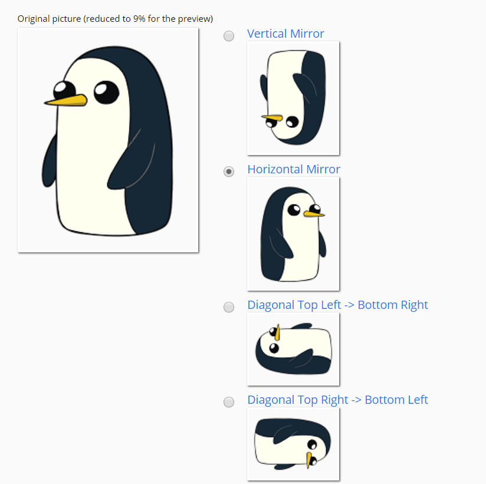

Change Character Speed
My initial design for this game was a 2d platformer. However,
I decided to go with a simple WASD-controlled game where a character
has to reach a part of a map to win.
I separated my game into several sections:
The character that the user controls is a penguin. I used this website to flip the characters around horizontally.

I divided the game into two difficulties:
The gameplay is fairly simple: use the WASD keys to get the penguin to the igloo near the top right of the game.
If the penguin fails to reach the igloo, i.e., the penguin touches a polar bear, the player is brought to the lose screen. From there, the player has the option to play again, but the loss is counted.
However, if the penguin does reach the igloo, the player gains a point and is able to play again.
In addition, several sound files were selected from freesounds.org to create a more interactive experience in the game.
Overall, my inspiritation for developing this game derived from the multiple flash games I've gotten the opportunity of playing years prior.
At the time we created this physical controller, this game was not yet fully developed, so I used a groupmate's game to test out the device. Below are some screenshots of the development process.
We used Play-Doh to complete our electrical circuit. In total, 4 Play-Doh balls were used to connect to the WASD ports on the Makey Makey.
Successfully, the Play-Doh balls were able to act as an alternative to the keyboard.